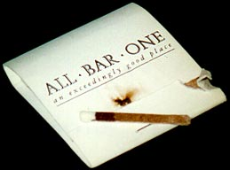

 Everybody has one thing that they do that is a very Good Idea, is just common sense, and isn't at all obvious to everyone else. Here is a small collection of such handy tips that I have collected over the years.
Note: I'd credit the person who gave me each tip, but I'm not sure that any of the tips are original. Still, Alex has been pretty ingenious.
Small polythene bags are pretty ubiquitous in supermarkets these days: you always get fresh vegetables in them. Unfortunately, it's hard to re-use the bags becuase the knots in the top are hard to untie. Well, you can do it like this: twist the polythene above the knot until it's rigid, hold the know gently with the other hand, and push the rigid bit through the knot.
So there you are, trying to get the gas hob to light, with the ignition sparking away. Well, all you need to do is blow gently on it while you're pressing the ignition.
The hard way: when you get bored of waiting for the ice to melt at room temperature get a ten-inch cooks knife, with a heavy two-inch wide blade, then start hacking away at the ice. This is lots of fun, until you hear the hissing sound of escaping gas and notice a little pierce-hole the same shape as the tip of the blade of the knife that you are holding guiltily in your right hand. I actually did this once, and the owner of the fridge was not best pleased.
The easy way: use a hair dryer.
It used to really annoy me, at least, when a block of cheese got down to the last little bit and I would almost lose my fingers trying to turn it into lots of stupidly small slices.
What you have to do is to keep a plastic tub for grated cheese in the freezer; when you have a small awkward bit of cheese left, just grate it into the tub. If you mix different kinds of cheese, so much the better. Grated cheese keeps well in the freezer, and is ideal for making sauces or for putting under the grill when you just want toast al quattro fromaggi.
Look, I don't smoke - that's my excuse. You see, I only just found out how to light those cardboard matches that come in little flat, square cardboard packets when someone else showed me recently.
All you have to do is tear off a match, squeeze the head of the match between the front of the packet and the brown strip, then pull it out sharply, away from its head. Then, the match lights, and doesn't bend.
If you use your computer to create or edit colour graphics you should set the desktop/application background to solid 50 per cent grey. Otherwise, if you use a colour background, the large area of colour on the screen distorts your perception of other colours on the screen. 50 per cent is a good tint of grey because it reduces the amount of contrast on the screen, which reduces eye strain.
Serious graphics designers use Photoshop, which has always had a mode where the image is centred on a 50 per cent grey background.
If you have to schedule tasks on a 'to do' list, remember that in general a task's urgency is independent of its importance. That is, all four combinations of urgent/not urgent, and important/not important are possible, together with every gradation in between.
Many electronic organisers allow you to set a task's priority (importance) and due date (urgency), but you cannot compare the tasks' urgencies and priorities unless you use a Task-Graph (a kind of H-graph) instead of a 'to do' list.
{kind=link}
{kind=link}